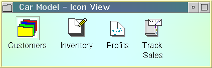
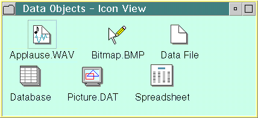
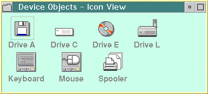

Objects can be classified by similarities in characteristics and behaviors. Each class of objects has a primary purpose that distinguishes it from other classes, and all three types of objects can contain other objects. CUA guidelines define three object classes:
A Container object holds other objects. Its primary purpose is to provide a way for the user to group related objects for easy access and retrieval. The following figure shows a Container object:
Data objects convey information, such as text or graphics, audio or video information. The following figure shows a Data object:
A Device object often represents a physical object in the real world. For example, a mouse object can represent the user's pointing device, and a modem object can represent the user's modem. Some device objects represent a logical object in the user's computer system rather than a physical object. For example, a shredder object can represent a logical object that disposes of the user's other objects. Some device objects can contain other objects. For example, a printer object can contain a queue of objects to be printed. The following figure shows a Device object: